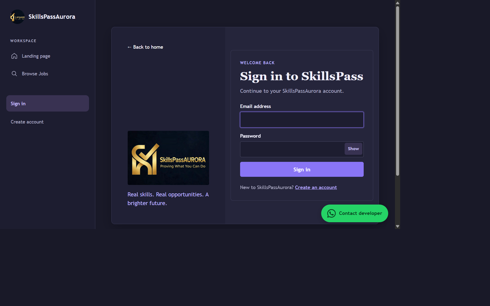
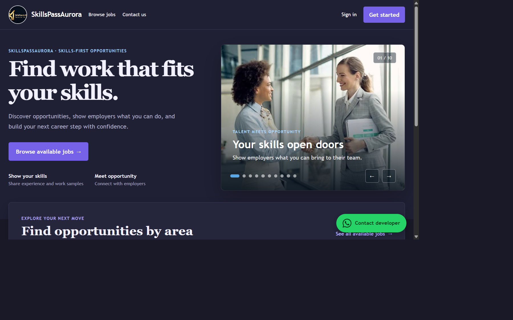
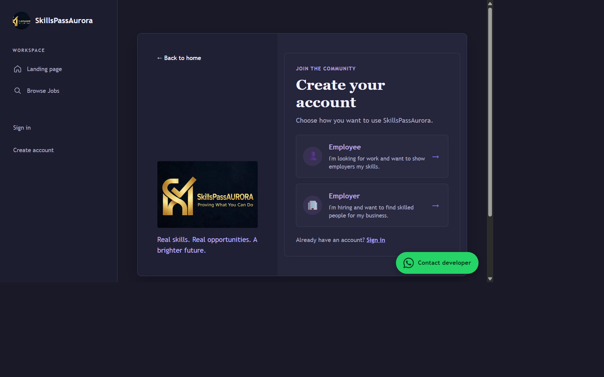
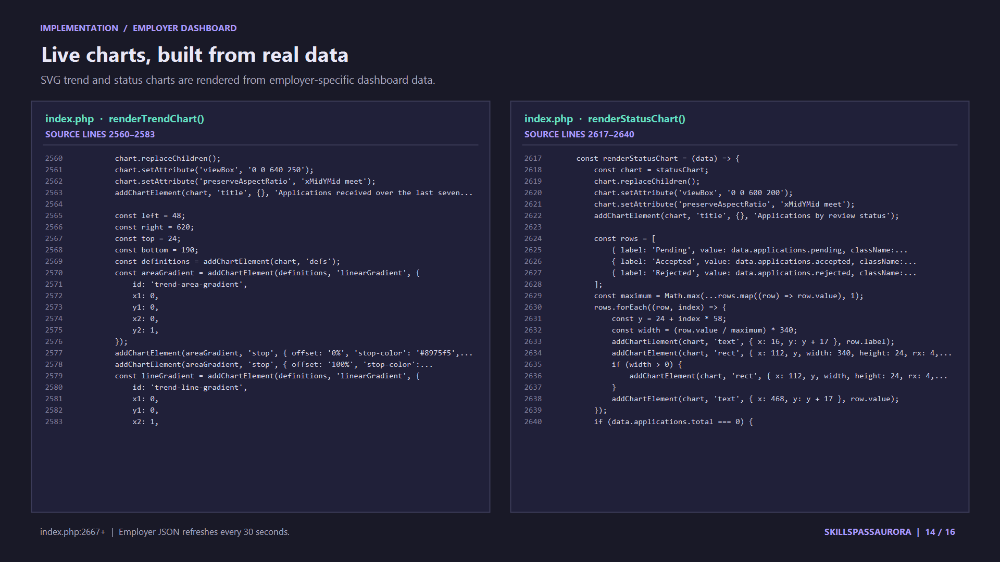
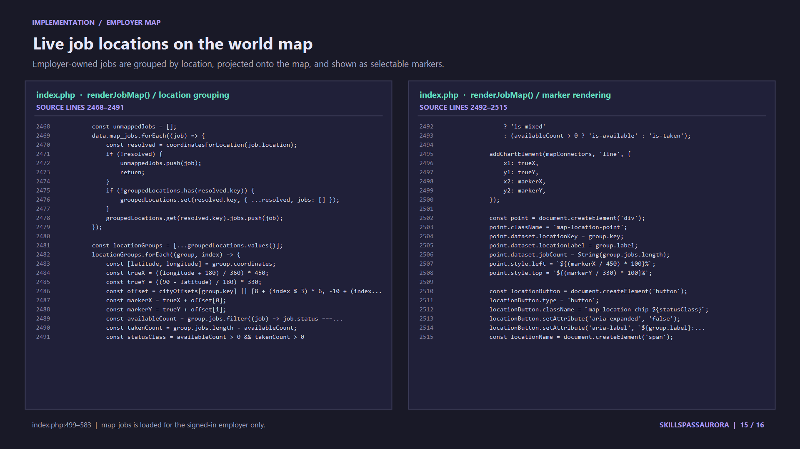
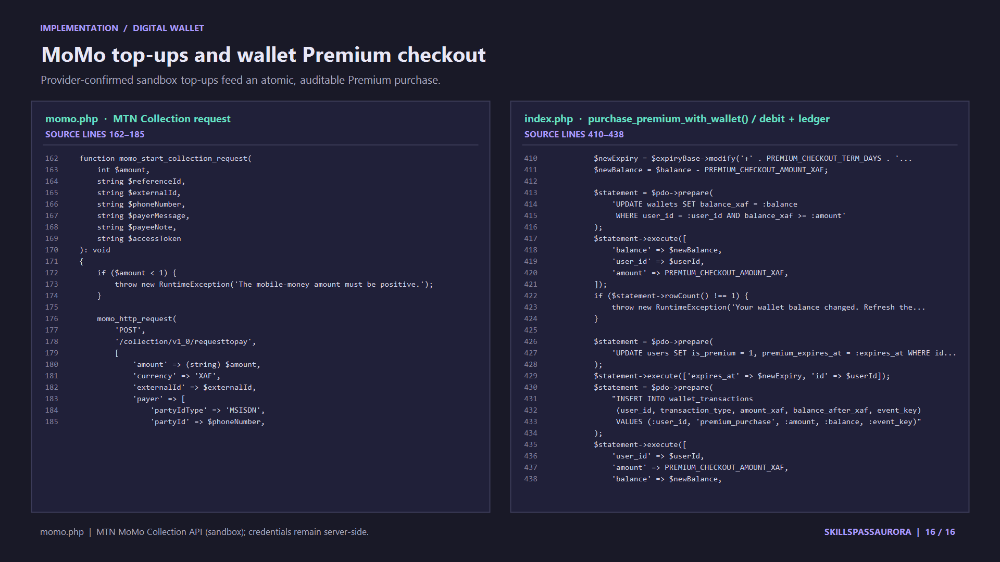

For job seekers
Discover available work, apply with context, and share a public skills profile.
Product overview • October 2026
Your skills are not useless.
A skills-first marketplace connecting job seekers with employers.
Job seeker and employer journeys · Hiring workflow · Security · Technology
Explore the system →A walkthrough of the current PHP + MySQL system

01 · Purpose
The platform creates a structured path from discovering a role to selecting a job seeker.
Discover available work, apply with context, and share a public skills profile.
Publish openings, review applications, and hire job seekers.
Accounts, job listings, application status, profiles, and access controls.
Product promise
Make opportunity discovery and job seeker review clearer: each job has an owner, each application is tied to a job seeker, and hiring updates the job status.
Built with server-rendered PHP and MySQL/MariaDB. No JavaScript framework is required.
02 · Roles
Role permissions are checked on the server, not just hidden in the interface.
Job Seeker
Employer
Public profiles show a person’s name, account type, member date, and picture. Email and private application data are not displayed publicly.
03 · Job seeker journey
The application form collects context beyond a résumé-style profile.

Browse available roles from the landing page or Jobs navigation.
A cover letter is required. Relevant experience and an HTTP/HTTPS portfolio link are optional.
Application status is visible to the job seeker: pending, accepted, or rejected.
04 · Employer workflow
Employer metrics and charts are scoped to the signed-in employer.

Chart is an illustration, not a live dashboard capture or current account data.
05 · Application lifecycle
An explicit state transition connects jobs, job seekers, and employer decisions.
A required cover letter plus optional experience and portfolio URL. A unique job and job seeker pairing prevents duplicate applications.
Selecting an eligible applicant marks the job Taken and rejects other pending applications for that job.
Employer actions are checked against the signed-in employer and that employer’s own job records.
06 · Premium access limits
The platform controls the number of jobs employers can post and the number job seekers can browse each month.
Free employers can keep up to 8 active job posts at a time. Additional postings require premium access.
Free job seekers see no more than 8 distinct job listings per month across the jobs page and dashboard. Server-side tracking prevents repeat visits or direct application requests from bypassing the cap.
Users with an active premium entitlement can bypass the free cap and continue browsing or posting more opportunities.
Premium activates only after the provider confirms the payment. Sandbox transactions are simulated and do not charge real money.
07 · Employer dashboard
Dashboard data refreshes every 30 seconds; employers can also refresh manually.
Daily applications · last 7 days
Counts are calculated from each employer’s own applications.
The dashboard charts use live employer-specific data. This slide shows a visual preview; code screenshots are on slide 14.
08 · Profiles & privacy
One profile supports job seeker discoverability without exposing email by default.
Display name, account type, member date, and profile picture.
Email and private application data are not displayed on public profiles.
JPEG, PNG, or WebP; maximum 2 MB; image type, size, and dimensions are checked.
Applicant details belong to applications for an employer’s own jobs. No applicant-unlock payment is required.
Applications include a required cover letter, optional experience, and an optional HTTP/HTTPS portfolio URL.
Public profile pages expose a limited view. Private actions still require server-side authorization.
09 · System architecture
Each request passes through PHP before data is read or changed in the relational database.
Job seeker or employer
index.php + PDO
InnoDB tables
SMTP + MTN MoMo sandbox wallet top-ups
Authentication, role checks, validation, CSRF, workflows, and dashboard JSON.
Relationships, unique constraints, indexes, cascading cleanup, and durable state.
SMTP supports sign-in codes; MTN MoMo Collection API handles sandbox wallet top-ups and payment-status checks.
Dashboard charts are browser-rendered SVG using employer-scoped JSON data. No frontend framework is required.
10 · Data & scale
A 64-bit identifier is a capacity foundation—not a promise of unlimited storage or throughput.
BIGINT UNSIGNED primary key; unique email; role index; password and OTP hashes; optional profile image.
Employer and job seeker account links; unique job/account pair; status and lookup indexes.
Premium expiry, provider references, idempotent payment status, and monthly job-view tracking.
The ID range is 0 to 18,446,744,073,709,551,615. One million users is well within this range.
Use schema.sql for a fresh installation or to add supported tables and columns to an existing database without replacing its records.
11 · Security
Security checks apply to sign-in, data changes, access decisions, uploads, and integrations.
Passwords are hashed. Incorrect attempts are counted and capped.
After 10 failed attempts, email OTP is required. Codes are hashed, expire in 10 minutes, allow five attempts, and have a one-minute resend interval.
PDO prepared statements, session regeneration, and CSRF tokens on state-changing forms.
Employer ownership checks guard posting, reviewing, and hiring actions.
Dynamic text is escaped; uploaded images are checked for MIME type, size, and dimensions.
SMTP and MTN sandbox credentials belong in server environment settings, never committed code.
Operationally: enable HTTPS, keep PHP and MySQL patched, restrict database privileges, back up data, and test recovery.
12 · Setup & walkthrough
A guided demo can explain the product even before a large dataset is loaded.
schema.sql file for a fresh install or upgradeDB_HOST, DB_NAME, DB_USER, and DB_PASSSlides 14–16 include screenshots of the source code for the live charts, job-location map, and digital wallet. Populate the database with test accounts and jobs before a live demo.
13 · Implementation · live charts
Code screenshots from the employer-specific live trend and application-status charts.

14 · Implementation · world map
Code screenshots showing employer-owned jobs grouped into mapped locations and rendered as selectable markers.

15 · Implementation · digital wallet
Code screenshots of the MTN MoMo Collection request and the wallet Premium debit and transaction ledger.
